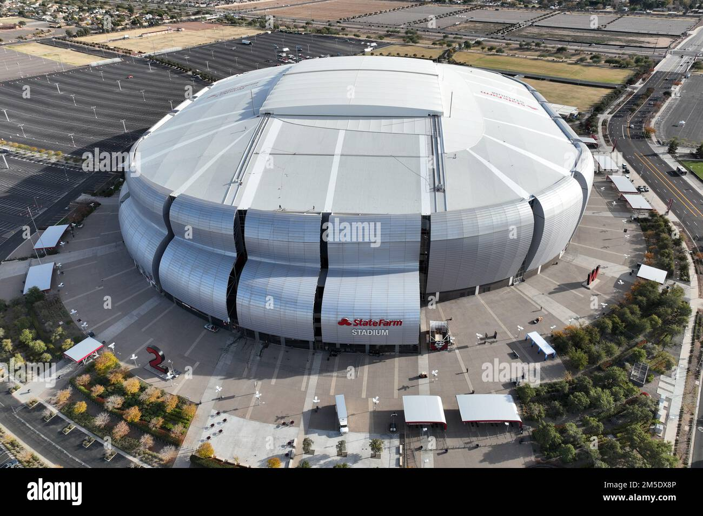
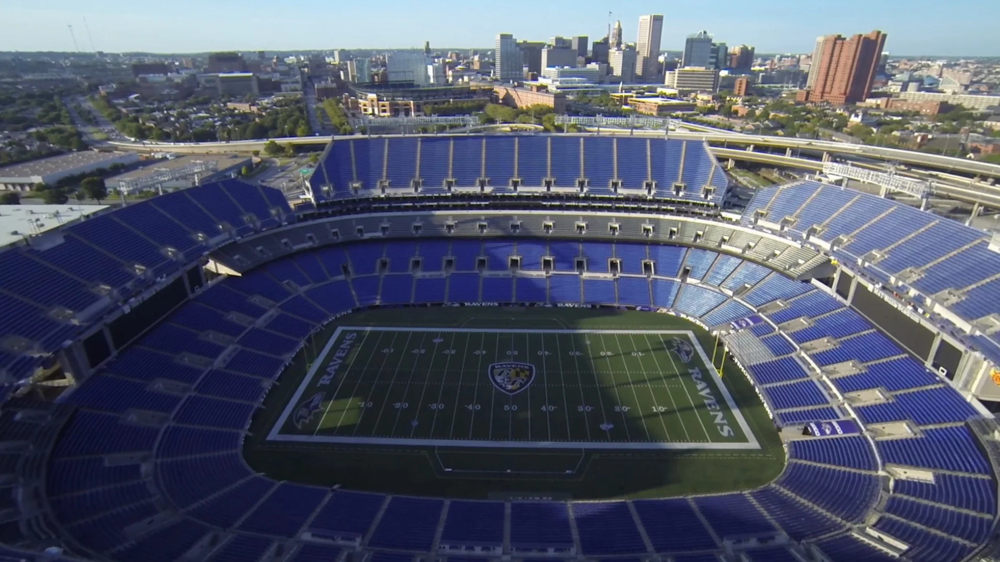
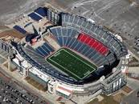

Team stats
ARIZONA CARDINALS
State farm stadium in Glendale, Arizona. Capacity: 63,400.
.jpg)
Josh Dobbs: Quarterback. 8 games played, 167 completions, 266 attempts, 62.8%, 1,569 yards, 8 touchdowns, 5 interceptions and 17 sacks.
.png)
Trey McBride: 17 games played, 81 receptions, 825 yards, 3 touchdowns.
ATLANTA FALCONS
.jpg)
Mercedes-Benz Stadium in Atlanta, Georgia. Capacity: 71,000.
.jpg)
Desmond Ridder: 15 games played, 249 completions, 388 attemps, 64.2%, 2,836 yards, 12 touchdowns, 12 interceptions and 31 sacks.
.jpg)
16 games played, 69 receptions, 110 targets, 905 yards, 2 touchdowns.
BALTIMORE RAVENS
M&T Bank Stadium in Baltimore, Maryland. Capacity: 71,008.
.jpg)
Lamar Jackson: 16 games played, 307 completions, 457 attempts, 67.2%, 3,678 yards, 24 touchdowns, 7 interceptions, 37 sacks.
.jpg)
Zay Flowers: 16 games played, 77 receptions, 108 targets, 858 yards, 5 touchdowns.
BUFFALO BILLS
.jpg)
Highmark stadium in Buffalo, New york. Capacity: 71,608
.jpg)
Josh Allen: 17 games played, 385 completions, 579 attempts, 66.5%, 4,306 yards, 29 touchdowns, 18 interceptions, 24 sacks.
.jpg)
Stefon Diggs: 17 games played, 107 receptions, 160 targets, 1,183 yards, 8 touchdowns.
CAROLINA PANTHERS
.jpg)
Bank of America stadium in Charlotte, North Carolina. Capacity: 74,867
.jpg)
Bryce young: 16 games played, 315 completions, 527 attempts, 59.8%, 2,877 yards, 11 touchdowns, 10 interceotions, 62 sacks.
.jpg)
Adam Thielen: 17 games played, 103 receptions, 137 targets, 1,014 yards, 4 touchdowns.
CHIGACO BEARS
.jpg)
Soldier field stadium in Chigaco illinois. Capacity: 61,500.
.jpg)
Justin Fields: 13 games played, 227 completions, 370 attempts, 61.4%, 2,562 yards, 16 touchdowns, 9 interceptions, 44 sacks.
.jpg)
DJ Moore: 17 games played, 96 receptions, 136 targets, 1,364 yards, 8 touchdowns.
Cincinnati Bengals

Paycor stadium in Cincinnati, Ohio. Capacity: 65,515.
Joe Burrow: 10 games played, 244 completions, 365 attempts, 66.8%, 2,309 yards, 15 touchdowns, 6 interceptions, 24 sacks.
.jpg)
Ja'Marr Chase: 16 games played, 100 receptions, 145 targets, 1,216 yards, 7 touchdowns.
CLEVELAND BROWNS
.jpg)
Cleveland Browns stadium in Cleveland, Ohio. Capacity: 67,431.
.jpg)
Deshaun watson: 6 games played, 105 completions, 171 attempts, 61.4%, 1,115 yards, 7 touchdowns, 4 interceptions, 17 sacks.
.jpg)
Amari Cooper: 15 games played, 72 receptions, 128 targets, 1,250 yards, 5 touchdowns.
DALLAS COWBOYS
.jpg)
AT&T stadium in Arlington, Texas. Capacity: 80,000.
.jpg)
Dak Prescott: 17 games played, 410 completions, 590 attempts, 69.5%, 4,516 yards, 36 touchdowns, 9 interceptions, 39 sacks.
.jpg)
CeeDee Lamb: 17 games played, 135 receptions, 181 targets, 1,749 yards, 12 touchdowns.
DENVER BRONCOS
.jpg)
Empower Field at Mile high stadium in Denver, Colorado. Capacity: 76,125.
.jpg)
Russell Wilson: 15 games played, 297 completions, 447 attempts, 66.4%, 3,070 yards, 26 touchdowns, 8 interceptions, 45 sacks.
.jpg)
Courtland Sutton: 16 games played, 59 receptions, 90 targets, 772 yards, 10 touchdowns.
DETROIT LIONS
.jpg)
Ford field in Detroit, Michigan. Capacity: 65,000.
.jpg)
Jared Goff: 17 games played, 407 completions, 605 attempts, 67.3%, 4,575 yards, 30 touchdowns, 12 interceptions, 30 sacks.
.jpg)
Amon-Ra St. Brown: 16 games played, 119 receptions, 164 targets, 1,515 yards, 10 touchdowns.
GREEN BAY PACKERS
.jpg)
Lambeau Field Grren Bay, wisconsin. Capacity: 81,441.
.jpg)
Jordan Love: 17 games played, 372 completions, 579 attempts, 64.2%, 4,159 yards, 32 touchdowns, 11 interceptions, 30 sacks.
.jpg)
Jayden Reed: 16 games played, 64 receptions, 94 targets, 793 yards, 8 touchdowns.
HOUSTON TEXANS
.jpg)
NRG stadium in Houston, Texas. CApacity: 72,220.
.jpg)
CJ Stround: 15 games played, 319 receptions, 499 attempts, 63.9%, 4,108 yards, 23 touchdowns, 5 interceptions, 38 sacks.
.jpg)
Nico Collins: 15 games played, 80 receptions, 109 targets, 1,297 yards, 8 touchdowns.
INDIANAPOLIS COLTS
.jpg)
Lucas oil stadium in indianapolis, indiana. Capacity: 70,000.
.jpg)
Gardner Minshew: 17 games played, 305 completions, 490 attempts, 62.2%, 3,305 yards, 15 touchdowns, 9 interception, 34 sacks.
.jpg)
Michael Pittman Jr: 16 games played, 109 receptions, 156 targets, 1,152 yards, 4 touchdowns.
JACKSONVILLE JAGUARS
.jpg)
TIAA Bank stadium in Jacksonville, Florida. Capacity: 67,838.
.jpg)
Trevor Lawrence: 16 games played, 370 completions, 564 attempts, 65.6%, 4,016 yards, 21 touchdowns, 14 interceptions, 35 sacks.
.jpg)
Calvin Ridley: 17 games played, 76 receptions, 136 targets, 1,016 yards, 8 touchdowns.
KANSAS CITY CHIEFS
.jpg)
GEHA field at Arrowhead stadium in Kansas city, Missouri. Capacity: 76,416.
.jpg)
Patrick Mahomes: 16 games played, 401 completions, 597 attempts, 67.2%, 4,183 yards, 27 touchdowns, 14 interceptions, 27 sacks.
.jpg)
Travis Kelce: 15 games played, 93 receptions, 121 targets, 984 yards, 5 touchdowns.
LAS VEGAS RAIDERS
.jpg)
Allegiant stadium in Las vegas, Nevada. Capacity: 65,000.
.jpg)
Jimmy Garopollo: 7 games played, 110 completions, 169 attempts, 65.1%, 1,205 yards, 7 touchdowns, 9 interceptions, 14 sacks.
.jpg)
Davanta Adams: 17 games played, 103 receptions, 175 targets, 1,144 yards, 8 touchdowns.
LOS ANGELES CHARGERS
.jpg)
SoFi stadium in Las Angeles, California. Cpacity: 70,000.
.jpg)
Justin Herbert: 13 games played, 297 completions, 456 attempts, 65.1%, 3,134 yards, 20 touchdowns, 7 interceptions, 29 sacks.
.jpg)
Keenan Allen: 13 games played, 108 receptions, 150 targets, 1,243 yards, 7 touchdowns.
LOS ANGELES RAMS
SoFi stadium in Las Angeles, California. Cpacity: 70,000.
.jpg)
Matthew Stafford: 15 games played, 326 completions, 521 attempts, 62.6%, 3,965 yards, 24 touchdowns, 11 interceptions, 30 sacks.
.jpg)
Puka Nacua: 17 games played, 105 receptions, 160 targets, 1,486 yards, 6 touchdowns.
MIAMI DOLPHINS
.jpg)
Hard rock Stadium in miami, Florida.
.jpg)
Tua Tagovailoa: 17 games played, 388 completions, 560 attempts, 69.3%, 4,624 yards, 29 touchdowns, 14 interceptions, 29 sacks.
.jpg)
Tyreek Hill: 16 games played, 119 receptions, 171 targets, 1,799 yards, 13 touchdowns.
MINNESOTA VIKINGS
.jpg)
US Bank stadium in Minneapolis, Minnesota. Capacity: 73,000.
.jpg)
Kirk Cousins: 8 games played, 216 completions, 311 attempts, 69.5%, 2,331 yards, 18 touchdowns, 5 interception, 17 sacks.
.jpg)
Justin Jefferson: 10 games played, 68 receptions, 100 targets, 1,074 yards, 5 touchdowns.
NEW ENGLAND PATRIOTS
GIllette stadium in Foxborough, Massachusetts. Capacity: 65,878.
.jpg)
Mac Jones: 11 games played, 224 completions, 345 attempts, 64.9%, 2,120yards, 10 touchdowns, 12 interceptions, 22 sacks.
.jpg)
DeMario Douglas: 14 games played, 49 receptions, 79 targets, 561 yards.
NEW ORLEANS SAINTS
.jpg)
Caesars Superdome in New orleans, louisiana. Capacity: 83,000.
.jpg)
Derek Carr: 17 games played, 375 completions, 548 attempts, 68.4%, 3,878 yards, 25 touchdowns, 8 interceptions, 31 sacks.
.jpg)
Chris Olave: 16 games played, 87 receptions, 138 targets, 1,123 yards, 5 touchdowns.
NEW YORK GIANTS
.jpg)
MetLife stadium in East Rutherford, New Jersey. Capacity: 82,500.
.jpg)
Daniel Jones: 6 games played, 108 completions, 160 attempts, 67.5%, 909 yards, 2 touchdowns, 6 interceptions, 30 sacks.
.jpg)
Darius Slayton: 17 games played, 50 receptons, 79 targets, 770 yards, 4 touchdowns.
NEW YORK JETS
MetLife stadium in East Rutherford, New Jersey. Capacity: 82,500.
.jpg)
Zach Wilson: 12 games played, 221 completions, 368 attempts, 60.1%, 2,271 yards, 8 touchdowns, 7 interceptions, 46 sacks.
.jpg)
Garrett Wilson: 17 games played, 95 receptions, 168 targets, 1,042 yards, 3 touchdowns.
PHILADELPHIA EAGLES
.jpg)
Lincoln financial field in philadelphia, pennsylvania. Capacity: 67,594.
.jpg)
Jalen Hurts: 17 games played, 352 completions, 538 attempts, 65.4%, 3,858 yards, 23 touchdowns, 15 interceptions, 36 sacks.
.jpg)
AJ Brown: 17 games played, 106 receptions, 158 targets, 1,456 yards, 7 touchdowns.
PITTSBURGH STEELERS
.jpg)
Acrisure Stadium in Pittsburgh, Pennsylvania. Capacity: 68,400/
.jpg)
Kenny Pickett: 12 games played, 201 completions, 324 attempts, 62.0%, 2,070 yards, 6 touchdowns, 4 interceptions, 23 sakcs.
.jpg)
George Pickens: 17 games played, 63 receptions, 106 targets, 1,140 yards, 5 touchdowns.
SAN FRANSISCO 49ERS
.jpg)
Levi's stadium in Santa clara, California. Capacity: 68,500.
.jpg)
Brock Purdy: 16 games played, 308 completions, 444 receptions, 69.4%, 4,280 yards, 31 touchdowns, 11 interceptions, 28 sacks.
.jpg)
Branden Aiyuk: 16 games played, 75 receptions, 105 targets, 1,342 yards, 7 touchdowns.
SEATTLE SEAHWAKS
.jpg)
Lumen field in Seattle, Washington. Capacity: 68,740.
.jpg)
Geno Smith: 15 games played, 323 completions, 499 attempts, 64.7%, 3,624 yards, 20 touchdowns, 9 interceptions, 31 sacks.
.jpg)
DK Metcalf: 16 games played, 66 receptions, 119 targets, 1,114 yards, 8 touchdowns.
TAMPA BAY BUCCANEERS
.jpg)
Raymond James stadium in Tampa, Florida. Capacity: 75,000.
Baker Mayfield: 17 games played, 364 completions, 566 attempts, 64.3%, 4,044 yards, 28 touchdowns, 10 interceptions, 40 sacks.
.jpg)
Mike Evans: 17 games played, 79 receptions, 136 targets, 1,255 yards, 13 touchdowns.
TENNESSEE TITANS
.jpg)
Nissan Stadium in Nahsville, Tennessee. Capacity: 69,143.
.jpg)
Ryan Tannehill: 10 games played, 149 completions, 230 attempts, 64.8%, 1,616 yards, 4 touchdowns, 7 interceptions, 32 sacks.
.jpg)
DeAndre Hopkins: 17 games played, 75 receptions, 137 targets, 1,057 yards, 7 touchdowns.
WASHINGTON COMMANDERS
.jpg)
FedEx Field in Maryland. Capacity: 67,617.
.jpg)
Sam Howell: 17 games played, 388 completions, 612 attempts, 63.4%, 3,946 yards, 21 touchdowns, 21 interceptions, 65 sacks.
.jpg)
Terry McLaurin: 17 games played, 79 receptions, 132 targets, 1,002 yards, 4 touchdowns.